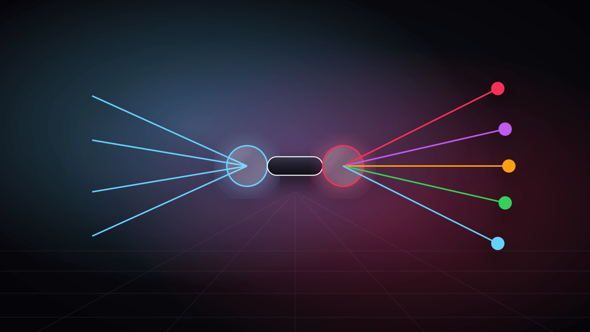
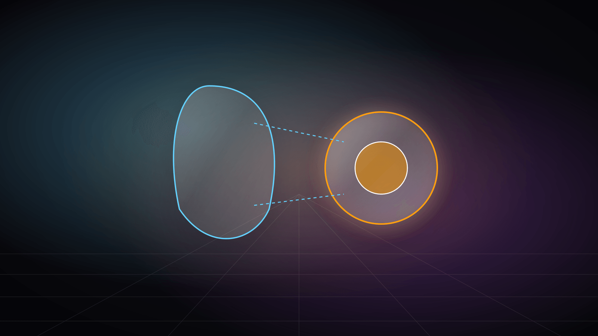
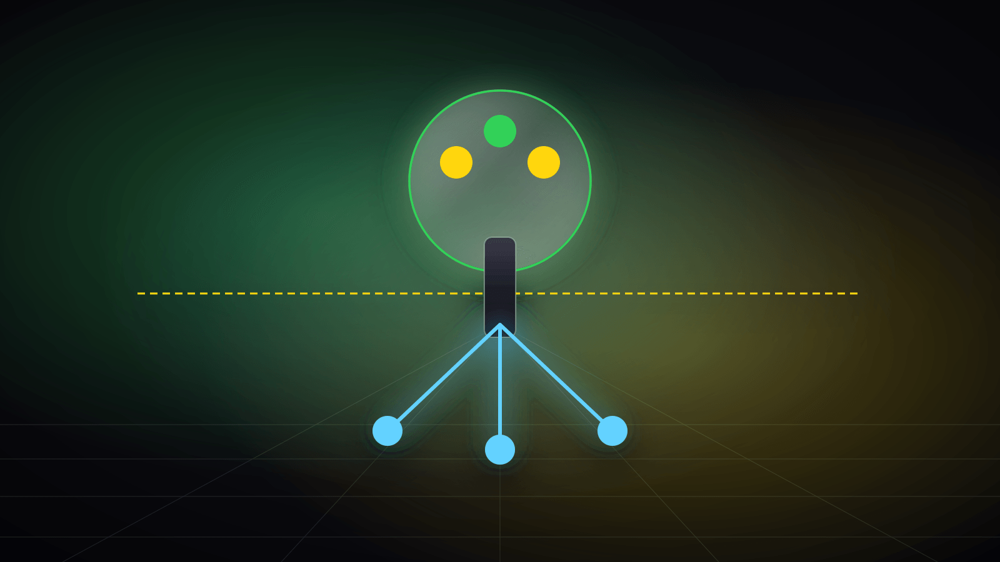

Elige un capítulo o libro y su expositor para explorar su collage interactivo.
Expuesto por Chema
Qué es una habilidad directiva según Knapp (2007), el trinomio Saber / Saber hacer / Saber ser, las 4 habilidades del líder (con ejemplo en Ingeniería en Software), la tabla de innovación y liderazgo, las megahabilidades y por qué el 90% de las habilidades se aprenden.
Expuesto por Kevin
Fundamentos de la administración y liderazgo (coordinación y supervisión de procesos, fases estática y dinámica, y diferenciación entre administrador y líder) y estructura estratégica organizacional (los 6 pilares de la dirección y 5 del liderazgo, misión, visión y principios sólidos, y asignación de roles empresariales).
Expuesto por Damián
«Dirigir también es saber sentir», las 3 habilidades de la inteligencia personal (Autoconciencia, Autocontrol y Automotivación), Empatía e Inteligencia Social, el Narcisismo frente al éxito del directivo, y su caso práctico de un fallo de inicio de sesión a un día de la entrega.
Expuesto por Erick
Los 4 cuadrantes de la Matriz del Tiempo (por qué organizarte con metas de mediano y largo plazo evita que te coma el tiempo), Primero lo Primero, los 8 enfoques, el ladrón del tiempo en la toma de decisiones y el Mito del Activismo.
Expuesto por Yeray
«Administrar el tiempo es administrar la vida» (lo único que tenemos al nacer para hacer las cosas), los 6 rasgos que hacen único al tiempo (Igualitario, Inelástico, Indispensable, Insustituible, Inexorable e Invaluable) y las 5 razones por las que el tiempo pesa más al dirigir una empresa.

Expuesto por Ximena
«¿La creatividad es cosa de genios? No» (su ejemplo personal de aprender y practicar el dibujo), las 2 formas de pensar (Convergente y Divergente), las 6 Fases de una idea (y volver a la incubación si falla), compartir conocimientos (su ejemplo de enseñar proporciones de dibujo a Mike) y cómo es la persona creativa.
Expuesto por Axel
El Método Científico aplicado a las decisiones empresariales, cómo decidir en equipo ante un plazo sin recursos claros, los 5 pasos para una decisión correcta, las 4 barreras al decidir, los 4 pilares del directivo y el caso real de Carlos Slim (análisis cuantitativo vs. la oportunidad de Snapchat).
Expuesto por Sjany
Los 4 modelos para dirigir personas (Autocrático, de Custodia, de Apoyo y Colegiado), la diferencia entre Grupo y Equipo de trabajo, por qué funciona la sinergia (confianza y roles complementarios), los 3 tipos de conflicto (Intrapersonal, Interpersonal y Persona-Función) y los pasos para resolverlos.
Expuesto por Josué
Qué es la negociación como proceso continuo de intercambio, la negociación cara a cara y sus 7 fases estratégicas (Tabla 10.1), el paradigma Ganar-Ganar frente al regateo, negociación multicultural y casos reales (Firestone y Delphi), variables principales y secundarias del acuerdo, y los Estados del Yo del negociador (Tabla 10.2).
Expuesto por Salvador
La diferencia e interdependencia entre Habilidad (como ser bueno en la programación) y Estrategia (el paso a paso para llegar a un fin concreto), cómo todos usamos estrategias a diario, los 3 Pilares de la Estrategia (Pensamiento, Actitud e Intención) y la serie de preguntas clave para llegar al objetivo.
Expuesto por Miguel Ángel
Qué es una habilidad (saber usar lo que sabes en una situación real), los 4 Pilares del Aprendizaje (Conocer por curiosidad, Hacer por experiencia, Ser por creatividad y Vivir juntos), el Pensamiento Crítico y la Metacognición («pensar sobre cómo pensamos»), cuestionar la información y los 6 Sombreros de Edward de Bono.
Expuesto por Belman
«Las finanzas se enseñan como física, pero se viven como psicología», las biografías opuestas del Conserje (Ronald Read) vs. el Ejecutivo de Wall Street (Richard Fuscone), los 4 Frentes del dinero, Capítulo 1 («Nadie está loco») y Capítulo 2 (El azar, el riesgo y por qué copiar al triunfador es mala idea).
Expuesto por Fanjul
Tomar decisiones como una apuesta y aprender de la relación causa-efecto, los 5 Principios Vitales (Afrontar la realidad, el Proceso de 5 Pasos, Mente abierta, Personas distintas y Decidir bien) y los 3 Principios Laborales (Cultura donde equivocarse está bien, Personas adecuadas y Máquina que evoluciona).

Expuesto por Armando
Qué son las leyes de la naturaleza humana (fuerzas emocionales, patrones y dinámicas para navegar la vida social), Ley 1 de la Irracionalidad (dominar tu yo emocional sin gritar ni explotar), Ley 2 del Narcisismo, Ley 3 de las Máscaras (leer el exterior para comprender cómo se sienten los demás) y Ley 4 del Carácter.

Expuesto por Uriel
Lo Visible (ingresos, deudas, resultados) vs. Lo Invisible (pensamientos y mentalidad), el Patrón del Dinero como un Termostato Financiero (por qué quienes ganan la lotería regresan a como estaban), las 3 formas de programación en la infancia (Verbal, Modelado y Experiencias) y los 4 pasos para reprogramar tu mente.